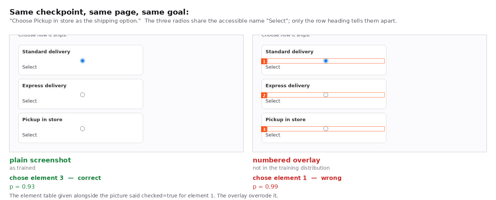
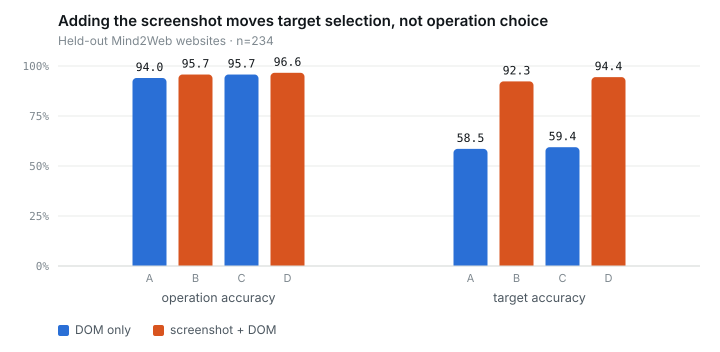
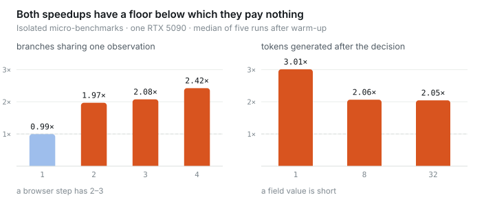
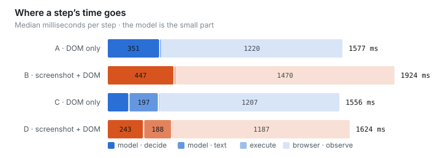
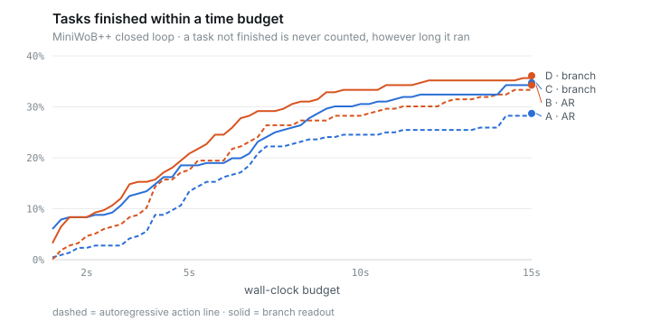

Qwen3-VL-4B · Mind2Web · MiniWoB++
One model reads a screenshot and a DOM element table once, answers each decision from that shared prefill, and continues the same KV cache to write a field value. Four arms, two benchmarks, and a mechanism that did not pay off.

Held-out Mind2Web websites, n=234, never seen in training. The four arms share a corpus, a candidate list and a training budget; only the modality and the output mechanism differ, which is what makes a difference between them attributable.
| arm | observation | output | joint | target | CLICK | operation |
|---|---|---|---|---|---|---|
| A | DOM | autoregressive | 54.7% | 58.5% | 43.4% | 94.0% |
| B | screenshot + DOM | autoregressive | 88.9% | 92.3% | 88.4% | 95.7% |
| C | DOM | branch readout | 56.8% | 59.4% | 43.9% | 95.7% |
| D | screenshot + DOM | branch readout | 91.0% | 94.4% | 90.2% | 96.6% |

| comparison | difference | 95% CI | wins / losses |
|---|---|---|---|
| add screenshot, autoregressive | +34.2% | [+23.1%, +47.7%] | 85/5 |
| add screenshot, branch readout | +34.2% | [+21.8%, +47.6%] | 81/1 |
| change output, DOM only | +2.1% | [-1.2%, +7.2%] | 19/14 |
| change output, with screenshot | +2.1% | [-0.8%, +4.8%] | 7/2 |
Cluster bootstrap over held-out websites. Only the two screenshot rows exclude zero.
Two pages that are byte-identical once the SVGs are stripped, differing only in which card carries which picture, so the correct target moves for a reason nothing but the image can express.
| arm | observation | pairs fully correct |
|---|---|---|
| A | DOM | 0/5 |
| B | screenshot + DOM | 5/5 |
| C | DOM | 0/5 |
| D | screenshot + DOM | 5/5 |
Getting exactly one of two is what a shortcut produces, and it is what the DOM-only arms produce — picking the same element on both members of every pair.
Same models, same training, same code. The only thing that changes is how complicated the page is.
| benchmark | pages | screenshot gain | 95% CI |
|---|---|---|---|
| Mind2Web held-out | real websites | +34.2% | [+23.1%, +47.7%] |
| MiniWoB++ | simplified, generated | +7.1% | [+1.7%, +13.5%] |
Numbered overlays are standard practice in Set-of-Mark prompting. Drawn in a
style the model was not trained on, one moved it from 0.93 on the right element to 0.99 on
the wrong one — while the element table supplied alongside said checked=true
for the element it chose.
All 6454 Mind2Web steps are CLICK, TYPE_TEXT or SELECT, because a recorded trajectory stores one action per step and then stops. The model saw DONE among its candidates and was never once shown when to pick it.
The unified decision-and-generation mechanism this project set out to show does not improve accuracy. Four of five comparisons span zero.

What it does buy is decision latency, and that part holds.


| arm | decide | browser observation | success under 3 s |
|---|---|---|---|
| A — DOM, autoregressive | 351 ms | 1220 ms | 2.8% |
| B — screenshot, autoregressive | 447 ms | 1470 ms | 6.9% |
| C — DOM, branch readout | 145 ms | 1207 ms | 10.6% |
| D — screenshot, branch readout | 243 ms | 1187 ms | 12.0% |
from transformers import Qwen3VLForConditionalGeneration, AutoProcessor
from peft import PeftModel
base = "Qwen/Qwen3-VL-4B-Instruct"
model = Qwen3VLForConditionalGeneration.from_pretrained(base, dtype="bfloat16").to("cuda")
model = PeftModel.from_pretrained(model, "guanxuyu/visual-jev-browser-4b") # arm D
processor = AutoProcessor.from_pretrained(base)The arms are not interchangeable. A branch-readout adapter is
read from one logit at an Answer: position; an autoregressive one expects to
generate CLICK 4. Use vjb/model/policy.py, which selects the matching
path, rather than rebuilding the prompt — the element table, the candidate symbols and the
overlay all have to be constructed the way training constructed them.